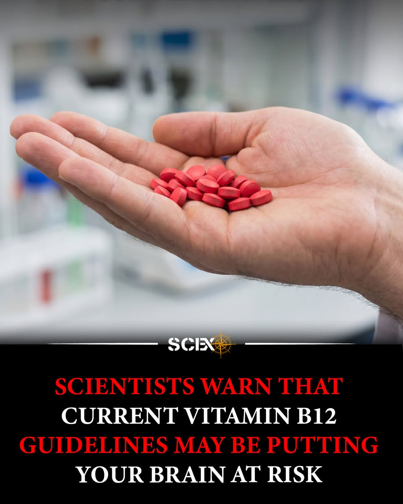

Even 'normal' vitamin B12 may be too low for older brains; active B12 tied to lesions
Louis links a UCSF study (Annals of Neurology) of 231 healthy older adults: lower active B12, even with total B12 above the deficiency cutoff, went with slower processing speed and more white matter lesions on MRI. He suggests B12 may explain the cognitive benefit of a basic multivitamin in COSMOS.